Installation Guide¶
This page covers the whole process of setting up a new image processing and analysis project. We first start by installing Mambaforge as our package manager. Then we will create a copy of this IPA template and guide you through the first steps with your freshly created project.
Mamba & Python¶
Python is a populare programming language which is easy to learn and is used by many for their scientif data analysis.
Mamba is an environment manager which we use to install Python packages. In essence it is a programm that helps us installing programs. More about the mamba concepts can be found here.
Installing Mambaforge¶
Mambaforge is a minimal installer using mamba and pre-configured to use conda-forge as package source. Conda-forge is a community driven Python package provider.
First, download the latest version of mambaforge for Windows from here:
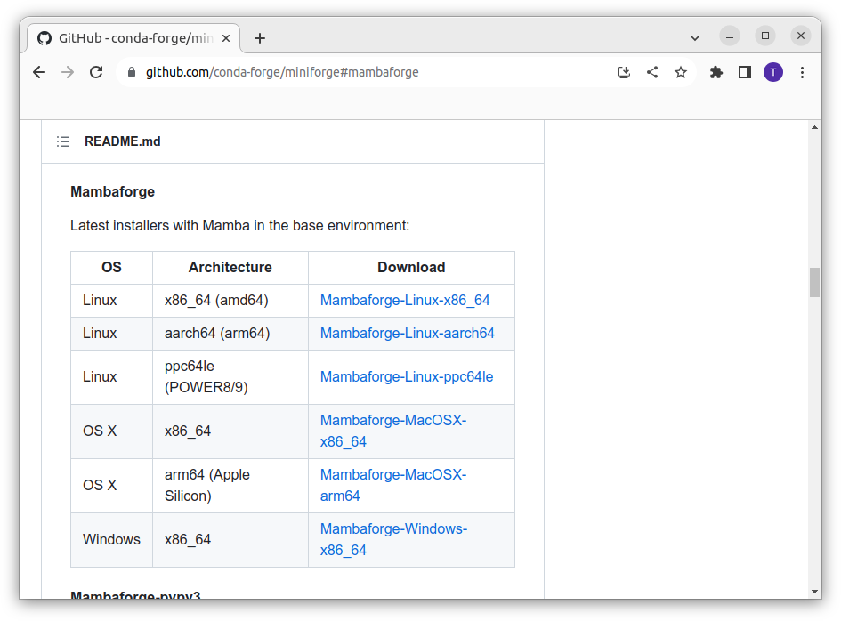
Start the installer and follow the instructions.
Click Next >:
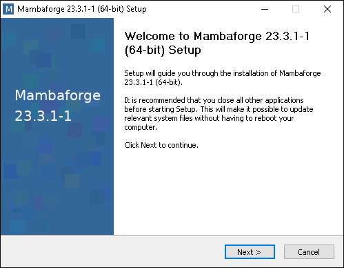
Click I Agree:
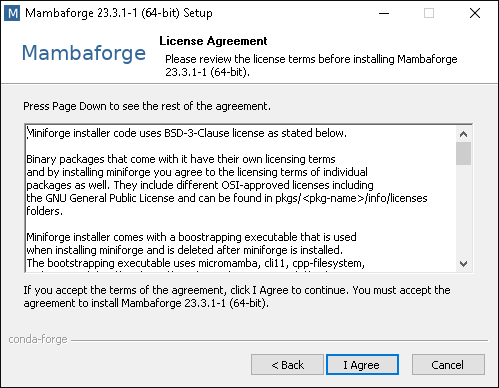
Select Just Me (recommended) and click Next >:
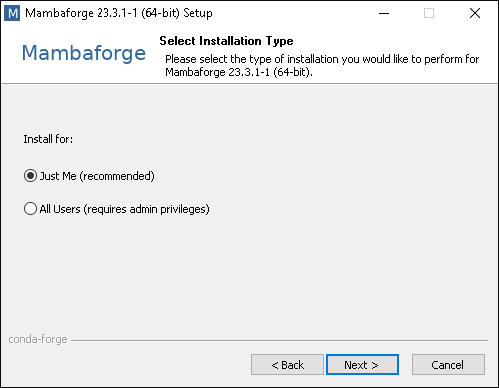
Keep the default Destination Folder and click Next >:
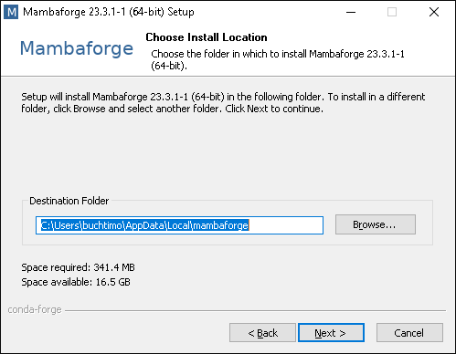
Select options 1), 3), and 4) and click Next >:
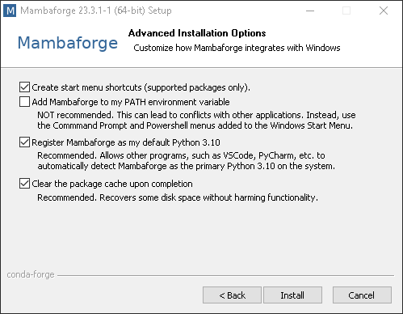
The installation has finished. Click Next >:
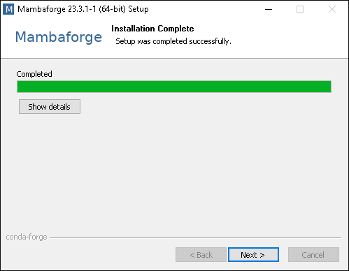
Click Finish to close the installer:
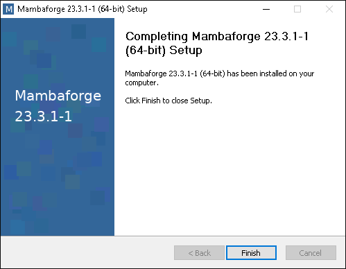
To start mambaforge search for Miniforge Prompt (yes, Miniforge) in your Windows search bar and click it to start the prompt:
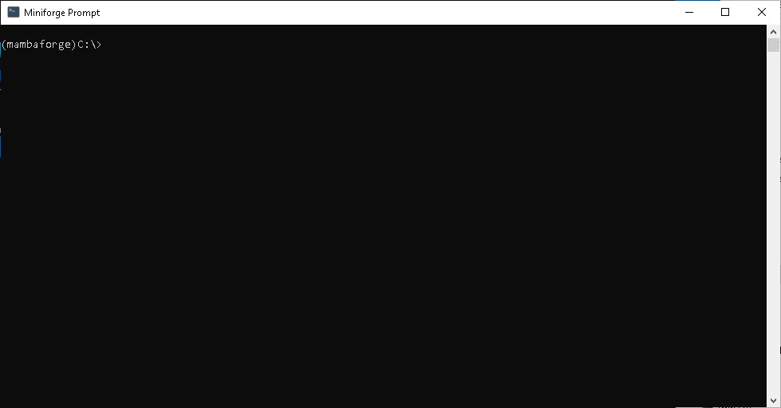
You are now in the base environment. Do not install anything into the base environment. It can break your whole setup and you would have to start all over again.
Open a new Terminal by typing Terminal in your spotlight search.
Run the following command to download the latest release:
curl -L -O "https://github.com/conda-forge/miniforge/releases/latest/download/Mambaforge-$(uname)-$(uname -m).sh"
And this command to install it on your machine:
bash Mambaforge-$(uname)-$(uname -m).sh
Copy template¶
Note
From now on we work inside the Miniforge Prompt or Terminal which has mamba installed.
The screenshots are from the Miniforge Prompt on Windows.
Copier is a command line tool and we first want to install it into its own environment. For this we copy-paste the following command into our open terminal:
mamba create -n copier-env -y python=3.9 copier -c conda-forge
Once this command has completed, we can activate the environment with:
mamba activate copier-env
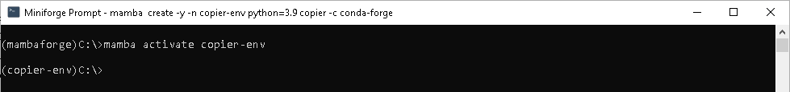
Note
The prefix of your command line prompt is now copier-env indicating that your are working inside the active environment.
Before we start the copier process we want to navigate to the parent directory where we want to setup our project space.
In my case this is C:\Users\buchtimo\projects:
cd Users\buchtimo\projects
Now we can start the copier process:
copier copy git+https://github.com/fmi-faim/ipa-project-template faim_demo-project
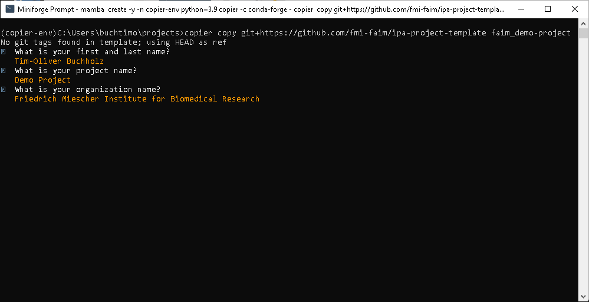
After completion of the copy process we want to deactivate the copier-env and change into the newly created project directory.
mamba deactivate
cd faim_demo-project
You can also open the directory in your File Explorer or Finder:
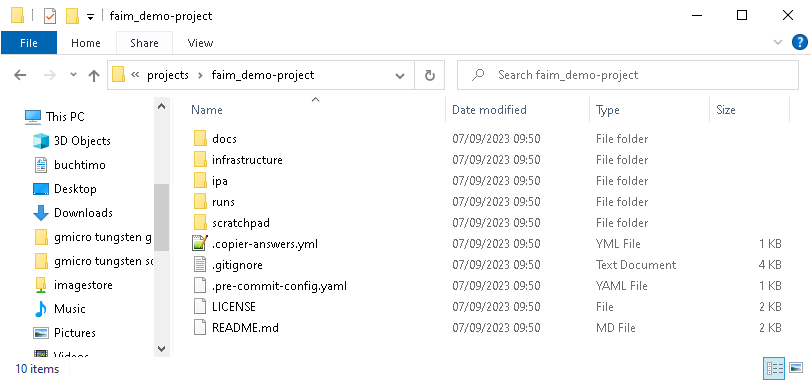
A detailed description of the individual files and directory can be found in IPA Project Structure.
Build Python IPA Environment¶
Now that we have our newly copied image processing and anlysis project we want to create our first Python environment which comes with some useful packages for image processing already installed.
With mamba we can use so-called environment yaml files which contain a list of packages we want to install.
In our new project we have such a file in infrastructure/env-yamls/demo-project-env.yaml with the following content:
name: demo-project # The default name of the environment.
channels:
- conda-forge # Source of the packages.
dependencies:
- python=3.9 # Here we want to use Python version 3.9
- pydantic=1.10.10 # The package pydantic is fix to version 1.10.10
- pyyaml
- scikit-image # From scikit-image we want to get the latest version.
- numpy<1.25
- tifffile
- pandas
- aicsimageio[all]
- bioformats_jar
- matplotlib
- tqdm
- iprogress
- ipywidgets
- questionary
- jupyter
- stackview
- sphinx
- furo
- myst-parser
- sphinx-inline-tabs
- sphinx-copybutton
- pre-commit
To build this environment we run the following command in our Miniforge Prompt or Terminal:
mamba env create -f infrastructure/env-yamls/demo-project-env.yaml
Follow the instructions and wait until the process has completed. Then you can activate the environemtn with:
mamba activate demo-project
Note
You can find these instructions with the exact commands for your project in infrastructure/README.md.